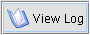

The following table describes the buttons available in the Xena interface and what each of them does.
| Button | Action |
|---|---|
| Clears the selected files list, ready to select new files for normalising. | |
|  | Displays the Xena log file. |
| For selecting one or more files to normalise. | |
| For selecting a directory of files to normalise. |
| Removes selected files or directories from the Items to Normalise section. | |
| Starts normalising the files or directories in the Items to Normalise section. | |
| Pauses the current normalisation process. The pause function will not interrupt the processing of the file currently being normalised, but will take effect before starting to process the next file. Once the normalisation processes is paused, the Resume button is displayed. |
| Stops the current normalisation process. The stop function will not interrupt the processing of the file currently being normalised, but will take effect before starting to process the next file. |
| Continues processing until all selected files have been normalised or until the process is interrupted by pause or stop. Available when processing has been paused. |
| Deletes all outputs of the current normalisation process. This is useful if the wrong files have been selected for conversion or if the wrong normalisation option has been selected. | |
| Saves the results of the current normalisation process and closes the current session. | |
| Normalises all files that failed the current normalisation process. |